1. Pendahuluan
Software Composition Analysis (SCA) adalah proses untuk menganalisis komponen
open-source dalam aplikasi untuk mendeteksi kerentanan keamanan, lisensi, dan
ketergantungan yang bermasalah. Berdasarkan materi dari perkuliahan DevSecOps
laporan SCA mencakup:
- Daftar dependency & versinya
- Kerentanan yang terdeteksi (CVE & severity)
- Versi aman yang direkomendasikan
- Mitigasi / remediation (upgrade library)
Aplikasi yang diuji: Web Antrian (PHP/Node/Python – disesuaikan project).
3.1 Praktik 1 – Menggunakan OWASP Dependency-Check
Langkah pertama dalam proses Software Composition Analysis (SCA) adalah melakukan pemindaian terhadap seluruh library yang digunakan pada aplikasi Web Antrian. Pemindaian ini bertujuan untuk mengidentifikasi apakah terdapat dependency yang memiliki kerentanan (CVE), versi yang tidak aman, atau komponen yang sudah usang.
Untuk memulai, buka Command Prompt (CMD) pada Windows 11 lalu masuk ke direktori proyek aplikasi:
Setelah berada di dalam folder proyek, jalankan OWASP Dependency-Check menggunakan Docker. Perintah berikut akan melakukan proses pemindaian penuh terhadap seluruh dependency dan menghasilkan laporan dalam format HTML:
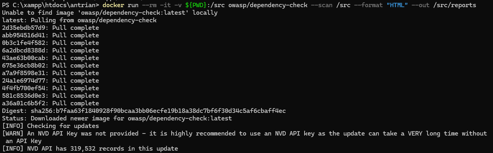
Setelah proses pemindaian selesai, Dependency-Check akan membuat folder baru bernama reports. Di dalamnya terdapat file utama laporan:
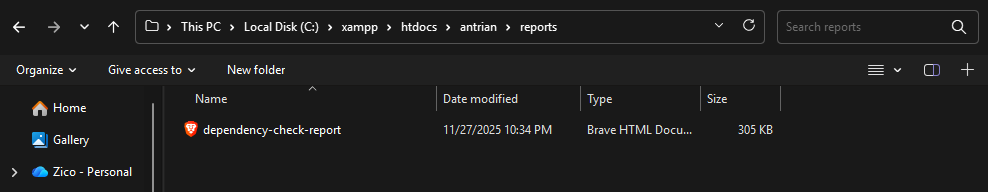
File HTML tersebut dapat dibuka melalui browser untuk melihat daftar library yang terdeteksi, informasi kerentanan (CVE), tingkat keparahan (Severity), hingga rekomendasi versi yang aman untuk digunakan.
Berikut hasil tampilan laporan Dependency-Check: dependency-check-report.html
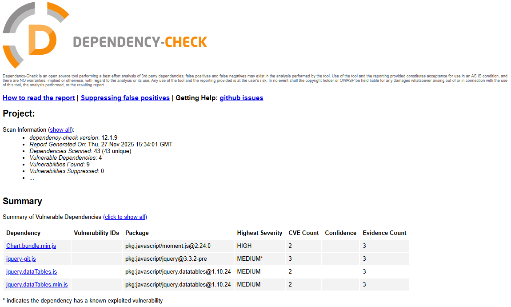
3.2 Praktik 2 – Menggunakan Snyk CLI
Selain OWASP Dependency-Check, analisis Software Composition Analysis juga dilakukan menggunakan Snyk CLI, sebuah tool keamanan modern yang mampu mendeteksi kerentanan pada dependency secara real-time serta memberikan rekomendasi versi aman. Snyk memiliki integrasi yang baik dengan ekosistem DevSecOps sehingga cocok digunakan dalam tahap pengembangan berkelanjutan.
Langkah pertama yang harus dilakukan adalah membuat akun di situs resmi Snyk melalui:
https://snyk.io
3.3 Praktik 3 – Menggunakan GitHub Dependabot
Dependabot adalah fitur bawaan GitHub yang berfungsi untuk memantau dan memperbarui dependency secara otomatis. Dengan alat ini, kerentanan pada library pihak ketiga dapat terdeteksi lebih awal sehingga mempermudah proses pemeliharaan keamanan aplikasi. Dependabot akan memberikan peringatan terhadap versi library yang sudah usang, membuka Pull Request pembaruan secara otomatis, dan menampilkan CVE yang terkait dengan paket yang digunakan.
Untuk mengaktifkan Dependabot, pastikan proyek telah berada di dalam repository GitHub. Selanjutnya, tambahkan file konfigurasi berikut pada direktori .github:
Path file:
Isi konfigurasi:
Konfigurasi ini membuat Dependabot melakukan pengecekan otomatis setiap hari terhadap kedua ekosistem dependency, yaitu npm dan Composer. Jika terdapat pembaruan versi atau kerentanan yang ditemukan, Dependabot akan segera memberikan notifikasi dan dapat membuka Pull Request untuk memperbaiki versi library tersebut.
Mengaktifkan Dependabot Security Updates
Buka halaman berikut sesuai repository:
Pada bagian Advanced Security, aktifkan opsi untuk Dependabot agar analisis dilakukan secara otomatis.
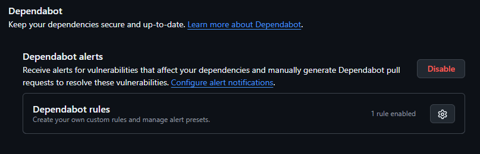
Melihat Hasil Deteksi Dependabot
Untuk melihat hasil pemindaian, masuk ke repository → Security → Dependabot. Pada halaman ini akan ditampilkan daftar alert, tingkat keparahan, serta rekomendasi pembaruan.
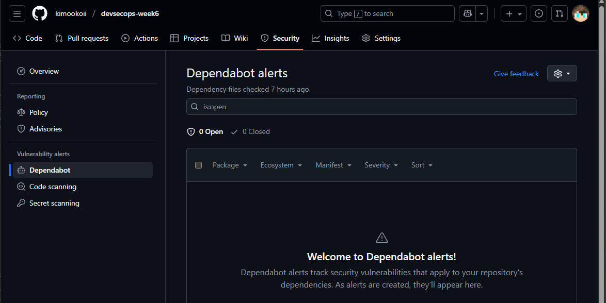
Secara keseluruhan, penggunaan Dependabot sangat membantu menjaga keamanan dependency dengan cara otomatis dan terstruktur, sehingga memperkuat proses SCA pada aplikasi Web Antrian.
4. Integrasi ke CI/CD Pipeline
Untuk memastikan proses Software Composition Analysis (SCA) berjalan otomatis setiap kali terjadi perubahan pada repository, langkah berikut dilakukan untuk mengintegrasikan SCA ke dalam pipeline CI/CD menggunakan GitHub Actions. Integrasi ini memungkinkan deteksi kerentanan berjalan secara berkelanjutan tanpa perlu menjalankan pemeriksaan secara manual.
1. Siapkan secret SNYK_TOKEN
Agar Snyk dapat dijalankan di GitHub Actions, API token harus disimpan sebagai secret:
- Masuk ke GitHub → repo kamu → Settings → Secrets and variables → Actions → New repository secret.
- Nama: SNYK_TOKEN
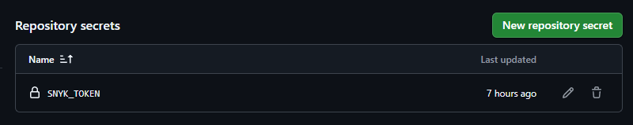
- Nilai: token dari Account Settings → API token di dashboard Snyk.
- Simpan.
2. Menambahkan Workflow GitHub Actions
Selanjutnya, dibuat sebuah workflow yang akan menjalankan OWASP Dependency-Check dan Snyk secara otomatis setiap kali ada push, pull request, atau pemindaian terjadwal.
- Add file → Create new file
- Isi workflow:
- Commit file.
3. Verifikasi dan Melihat Hasil
Setelah workflow ditambahkan dan commit dilakukan:
- Masuk ke tab Actions pada repository.
- Jalankan workflow secara manual dengan tombol Run workflow, atau tunggu hingga terpicu oleh push/pull request.
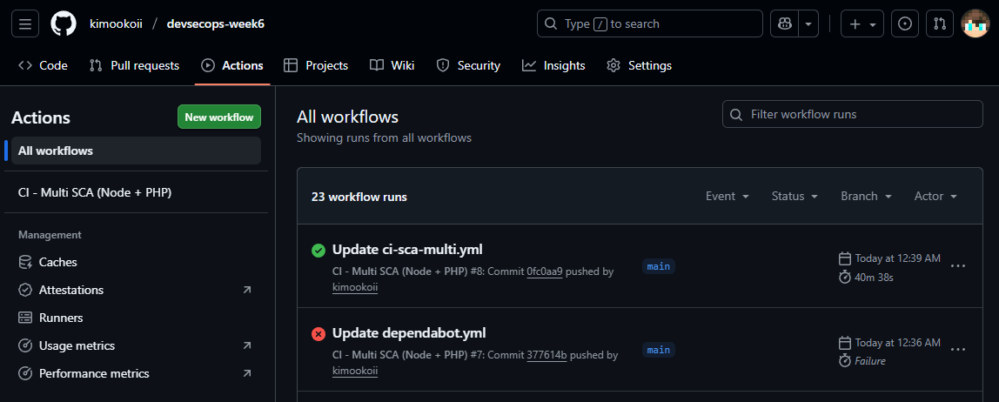
- Setelah proses selesai, buka job yang berjalan dan klik Artifacts.
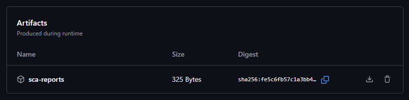
- Unduh file dependency-check-report.html: dependency-check-report.html
- Jika secret SNYK_TOKEN sudah diatur, laporan Snyk juga akan muncul pada log workflow atau pada snapshot monitoring di dashboard Snyk.
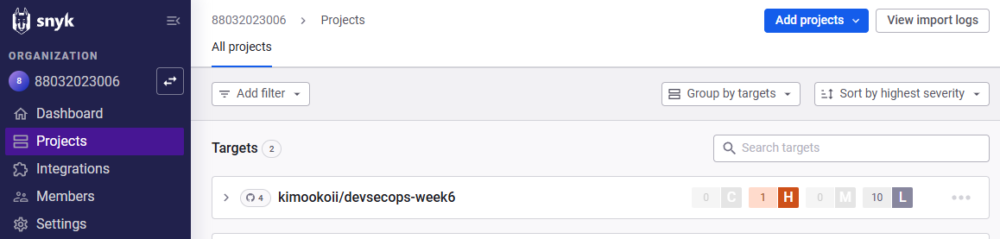
Integrasi ini memastikan bahwa pengecekan keamanan terhadap dependency dilakukan secara otomatis, terjadwal, dan terdokumentasi, sehingga mendukung penerapan DevSecOps pada aplikasi Web Antrian.
5.1 Analisis Hasil & Mitigasi : OWASP Dependency-Check
| Dependency |
Package |
Severity |
CVE Count |
Confidence |
Envidence Count |
| Chart.bundle.min.js |
pkg:javascript/moment.js@2.24.0 |
HIGH |
2 |
|
3 |
| jquery-git.js |
pkg:javascript/jquery@3.3.2-pre |
MEDIUM* |
3 |
|
3 |
| jquery.dataTables.js |
pkg:javascript/jquery.datatables@1.10.24 |
MEDIUM |
2 |
|
3 |
| jquery.dataTables.min.js |
pkg:javascript/jquery.datatables@1.10.24 |
MEDIUM |
2 |
|
3 |
Perbarui seluruh library JavaScript rentan (Chart.js, Moment.js, jQuery, dan DataTables) ke versi terbaru yang telah memperbaiki kerentanan, atau gantikan dengan versi yang direkomendasikan untuk menghilangkan risiko keamanan dari dependensi yang sudah usang.
Cara memberbaikinya:
1. Update moment.js
2. Update jQuery
3. Update DataTables (JS dan CSS)
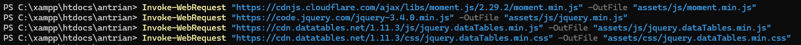
Untuk Windows, perintah wget tidak tersedia secara bawaan, sehingga pembaruan library dapat dilakukan menggunakan PowerShell melalui perintah Invoke-WebRequest sebagai pengganti. Cukup menjalankan perintah unduhan untuk moment.js, jQuery, dan DataTables, maka file akan otomatis terganti dengan versi terbaru. Alternatifnya, file juga dapat diunduh manual melalui browser. Dengan cara ini, proses update library tetap mudah dilakukan di lingkungan Windows.
5.2 Analisis Hasil & Mitigasi : Snyk
1. CWE-79: Improper Neutralization of Input During Web Page Generation ('Cross-site Scripting')
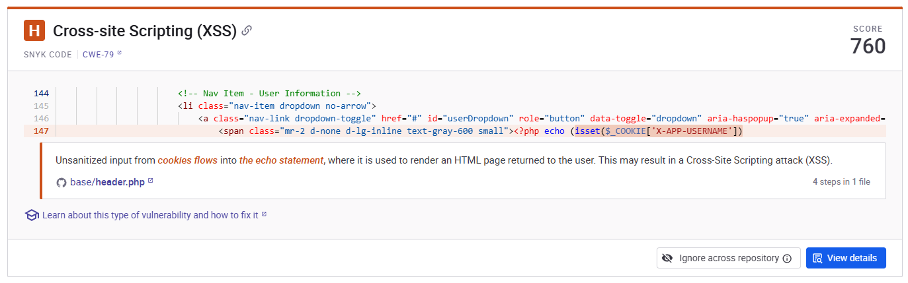
Mitigasi:
Lakukan validasi dan output encoding pada semua data yang berasal dari pengguna (termasuk cookie), aktifkan header keamanan seperti Content-Security-Policy, dan set cookie dengan flag HttpOnly & SameSite untuk mencegah XSS dan pencurian sesi.
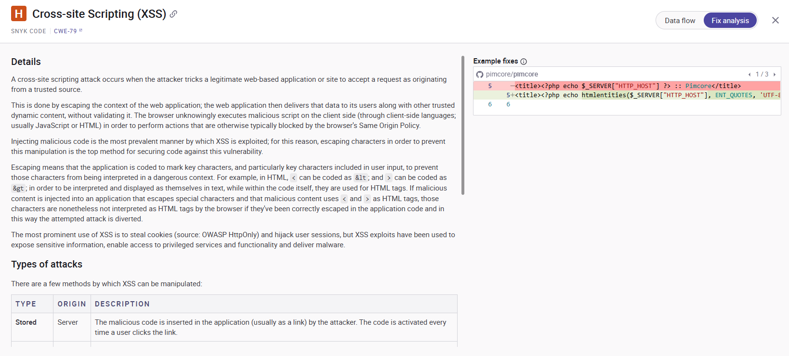
Cara memberbaikinya:
- Gunakan htmlspecialchars saat menampilkan data ke HTML (escaping untuk konteks teks).
- Jika data masuk ke atribut HTML, gunakan encoding khusus atribut (masih htmlspecialchars dengan ENT_QUOTES).
- Set cookie dengan flag keamanan (HttpOnly, Secure, SameSite).
- Tambahkan header Content-Security-Policy (CSP) untuk membatasi sumber skrip.
- Validasi/normalisasi input di server — tolak atau sanitasi input yang tidak sesuai pola (email, username, dsb.).
- Gunakan framework/templating yang melakukan escaping otomatis (mis. Twig, Blade) dan hindari echo langsung dari data pengguna tanpa escaping.
2. CWE-916: Use of Password Hash With Insufficient Computational Effort

Mitigasi:
Hindari penggunaan algoritma hash lemah seperti MD5 dan ganti dengan algoritma hashing yang kuat serta aman secara kriptografi, misalnya bcrypt, PBKDF2, atau Argon2.
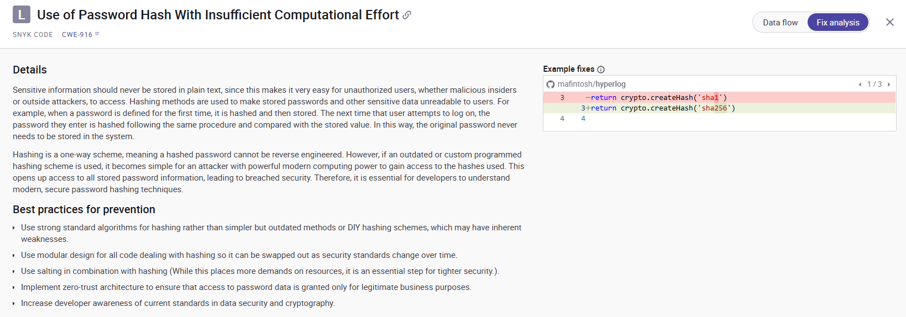
Cara memberbaikinya:
- Contoh perbaikan (Node.js)
- Atau gunakan library lebih aman:
6. Kesimpulan
Berdasarkan seluruh proses SCA yang dilakukan pada aplikasi Web Antrian, dapat
disimpulkan bahwa banyak komponen open source yang memerlukan pemantauan
berkelanjutan. Dengan menggunakan tiga tools berbeda (Dependency-Check, Snyk,
Dependabot), deteksi kerentanan menjadi lebih akurat dan cepat.
Kesimpulan utama:
- SCA sangat penting dalam pipeline DevSecOps.
- Tiap tool memberikan insight berbeda.
Dengan demikian, aplikasi menjadi lebih aman dan sesuai standar keamanan modern.